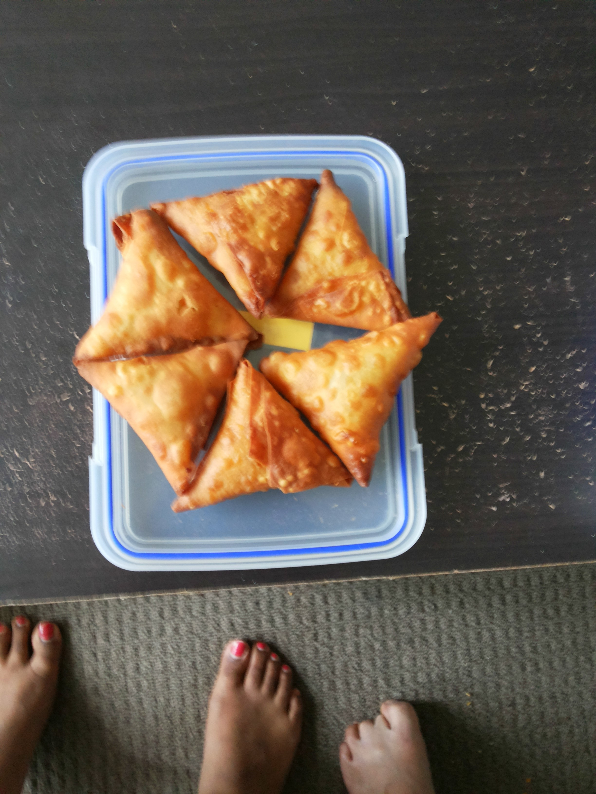

Samosa
Ingredients

- Pastry
- 1 cup all-purpose flour
- 2 tablespoons vegetable oil
- Filling
- 2 large potatoes (boiled)
- 1 onion, chopped
- 2 green chilies, very finely chopped
- 3 tablespoons oil
- 1⁄2 teaspoon ginger, grated
- 1⁄2 teaspoon garlic, crushed
- coriander seed
- 1 tablespoon cilantro, finely chopped
- 1⁄2 lemon, juice of
- 1⁄2 teaspoon turmeric
- 1⁄2 teaspoon garam masala
- 1⁄2 teaspoon red chili powder
- salt
Instructions
- Mix together the flour, oil and salt.
- Add a little water, until mixture becomes crumbly.
- Keep adding water, kneading the mixture till it becomes a soft pliable dough.
- Cover with a moist cloth and set aside for 20 minutes.
- Beat dough on a work surface and knead again.
- Cover and set aside.
- FILLING.
- Heat 3 tbsp oil.
- Add ginger, garlic, green chillies and few coriander seeds.
- Stir fry for 1 minute, add onions and saute till light brown.
- Add cilantro (fresh coriander), lemon juice, turmeric, red chili, salt and garam masala.
- Stir fry for 2 minutes.
- Add potatoes.
- Stir fry for 2 minutes.
- Set aside and allow to cool.
- Divide dough into 10 equal portions.
- Use a rolling pin, roll a piece of dough into a 5" oval.
- Cut into 2 halves.
- Run a moist finger along the diameter.
- Roll around finger to make a cone.
- Place a tablespoon of the filling into the cone.
- Seal the third side using a moist finger.
- Deep fry the samosas on low to medium heat until light brown.